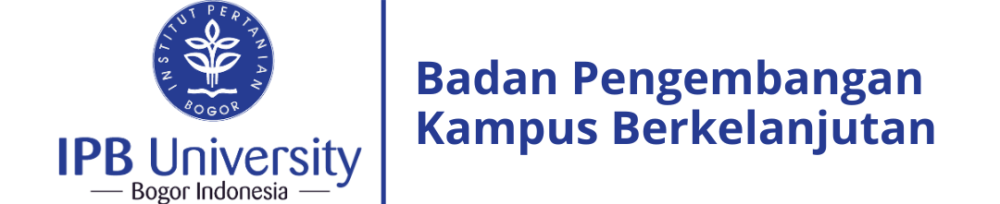
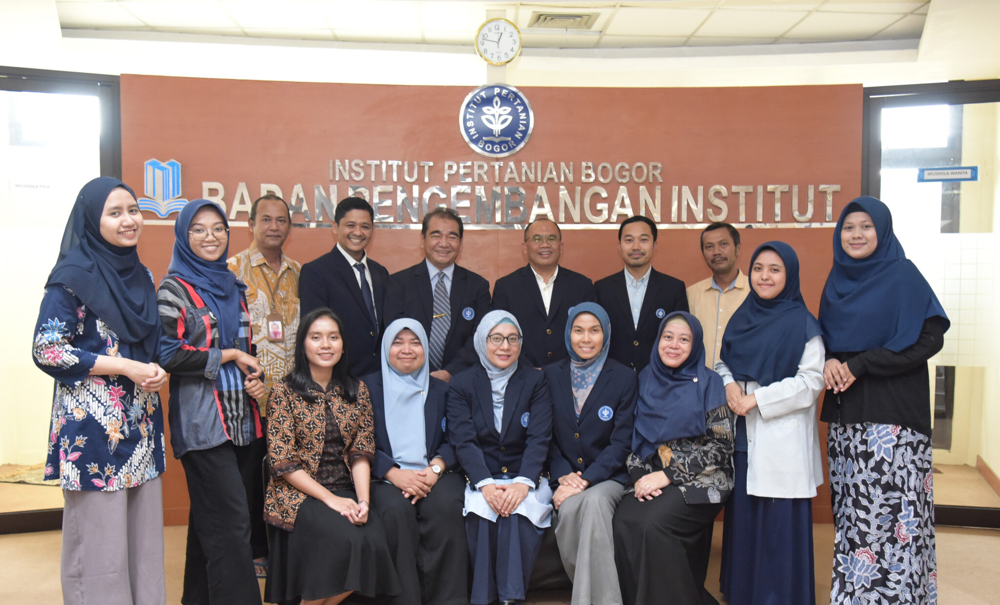

BPKB IPB University
Badan Pengembangan Kampus Berkelanjutan IPB University
BPKB bertugas pada perencanaan dan pengembangan kampus berkelanjutan untuk meningkatkan reputasi IPB dalam pencapaian tujuan pembangunan berkelanjutan, serta memperjelas arah IPB dalam mewujudkan socio-technopreneur university sesuai Rencana Jangka Panjang IPB.

Fungsi BPKB
- Koordinasi penyusun Rencana Induk Pengembangan IPB mencakup infrastruktur, bidang akademik, dan nonakademik dengan berbasiskan manajemen risiko
- Koordinasi penyusun Rencana Tata Ruang (RTR) IPB University Town yang meliputi areal kampus dan sekitarnya
- Pemberian arahan strategis dan desain pengembangan program kampus berkelanjutan dan pencapaian Sustainable Development Goals untuk bidang akademik, riset, pengabdian masyarakat, dan operasional kampus
- Koordinasi peningkatan rekognisi terhadap IPB dan reputasi dalam pencapaian Sustainable Development Goals dan sebagai kampus berkelanjutan di tingkat nasional dan global
- Pemonitoran dan evaluasi terhadap pembangunan sarana fisik dan non-fisik untuk mewujudkan kampus berkelanjutan
- Koordinasi penyusunan Rencana Strategis IPB
Struktur Birokrasi BPKB IPB

-
Ketua BPKB
Dr. Ir. Ibnul Qayim>-
Wakil Ketua Pengembangan Infrastruktur
Dr. Heriansyah PutraAsisten Pengembangan Infrastruktur
Dr. Anisa Dwi Utami
-
Wakil Reputasi
Dr. Rina MardianaAsisten Pengembangan Reputasi
Fifi Gus Dwiyanti
-
Supervisor Administrasi
Ade Iskandar -
Sekretaris
Naro Jihadi
Ridwan
Siti Aminah
Anwar -
Asisten Peneliti
Windi Mayang Sari
Hana Khoirunisa
Aliyah Baida
Zahra Wajdini
Jessica Veronica
Zayyaan Nabiila
-